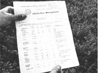
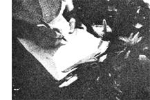
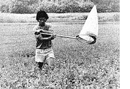

Wholistic gardeners, stand up and take a bow. At long last farmers, scientists, and--yes-even officials of the U.S. Department of Agri.
Although you're not likely to hear much about it on the 6 o'clock news, an honesttoGod revolution has begun in American agriculture ... one that promises to reduce pesticide use by 30% over the next decade! How? By replacing dangerous, petroleum-based chemicals with a bagful of bug-baffling tricks . . . some as new as tomorrow, others as old as farming itself.
This revolutionary approach to crop protection is known as Integrated Pest Management ... or IPM, for short. And while the name faintly smacks of bureau. cratic jargon, it's actually a pretty fair description of the program. For IPM aims to "manage" harmful insects (rather than obliterate them) through the "integrated" use of numerous strategies (instead of just pouring on ever larger quantities of ever more dangerous chemicals).
Farmers who implement IPM programs - judging, at least, by the record so farcan expect to increase both yields and profits. The rest of us will reap worthwhile benefits too: cleaner soil, water, air, and market produce. And, as an added bonus, all you backyard gardeners and homesteaders will soon be able to add a few new pest perplexers to the natural insect controls you've been using right along.
But why have farmers suddenly begun to change their minds about chemical pesticides after all these years? For one reason, the old poisons just don't work as well as they used to. Time was when you just set up a spraying schedule, then leaned back and watched your local duster apply liberal doses of chemical "crop insurance" to your fields . . . secure in the knowledge that, within a day or so, the only living things left on the treated acreage would be some tainted vegetation and a handful of migrant farmworkers with headaches.
But times change . . . and so do insects! And three decades spent dumping billions of pounds of chemicals on America's farmlands have produced races of "superbugs" ... genetic strains more or less resistant to one or more pesticides. Already, in fact, more than 250 species of harmful insects have evolved resistant subtypes ... and more are on the way. Which may be why worldwide crop losses to pests have nearly doubled since the 1940's even though the use of chemical pesticides has increased tenfold!
In other words, chemical "crop insurance" doesn't really insure much anymore, yet the cost of its use continues to soar year after year. Agriculturalists now not only have to spray more and more just to achieve the same amount of insect control, but the price of their potions-which are mostly petroleum derivatives-has risen right along with the skyrocketing cost of crude oil. And that's the main reason farmers are now beginning to turn to integrated pest management as the only way out of the pesticide predicament.
When a grower decides to kick the chemical habit and switch to IPM, he does have to climb back into his overalls, hop down from the air-conditioned cab of his tractor, and grub about in the dirt a bit. IPM works only if you know your crop, your land, and all the critters who live on it. And since few farmers these days have bothered to learn even a small fraction of the commonsense plant lore their ancestors once took for granted, most have to seek help from agricultural scientists !n order to set up an integrated pest management program that really works!
To get started, then, a farmer and his consultant first identify both the potential pests and the beneficial organisms present in a field or orchard .. . so they can adopt cultivation practices calculated to make life [1] miserable for the crop destroyers and [2] downright blissful for the predators and parasites which naturally attack those same bad bugs.
This is only part of the old-fashioned, down-home side of IPM ... and the system employs other tried-and-true measures that were commonly employed to outwit insects long before anyone had ever heard of DDT or its kin. These natural steps include crop rotation, careful selection of planting dates, precise management of water and fertilizer, attention to proper spacing between individual plants and adjacent rows ... and a dozen and one other obviously good ideas that were common knowledge to the grandparents of today's chemical farmers.
But this is only the beginning! For IPM merely starts with the wisdom of the past . .. and then builds on it with new tools supplied by modern technology. Tools such as computers programmed to make accurate crop forecasts . . . several differ. ent types of exotic bug traps . . . and various kinds of biological controls that replace synthetic pesticides.
An example: Insect traps-which may rely for their effect on color, shape, move. ment, noise, light, or the sexual attractants found in female bugs-have proven useful for gathering data on pest populations. The captured insects can then either be destroyed-which may be particularly effective in small gardens or fields-or sterilized for release back into the environment.
A farmer may also choose to hire trained "scouts"-often high school or college students-to monitor insect populations in his fields on a regular basis. Information supplied both by scouts and traps then enables IPM specialists-usually with the help of a nearby computer-to predict with remarkable accuracy if and when a particular pest may go on a rampage ... and how bad an outbreak is likely to be.
Such forecasts allow farmers to estimate whether or not projected damage will be severe enough to hurt them financially. If not-which is often the casethen only minimal controls-or even none at all!-may be necessary.
And when action is required, it can be directed only at the problem pest ... which means that you won't also needlessly destroy the beneficial organisms that naturally help control the destroyers to begin with.
In fact, IPM programs make a positive virtue of turning one (beneficial) critter against another (harmful pest). And their armies of "good guys" include ferocious parasites and predators drawn from the ranks of bacteria, viruses, fungi, insects, and other organisms.
For instance, Bacillus thuringiensis-a bacterium that infects the larvae of numerous moths and butterflies-has been widely used (in both IPM programs and backyard gardens) to control such pests as cabbage loopers, tent caterpillars, spruce budworms, and tussock moths. It's as natural as the day is long and Is available from most nurseries under such trade names as Biotrol, Dipel, and Thuricide.
In short, then, IPM projects have shown beyond doubt that you don't have to [1] use highly toxic chemicals or [2] attempt to eradicate pests entirely in order to realize high yields and healthy profits from the crops you raise. Most of the time, it's enough merely to hold pests down to manageable numbers. Such restraint means that you don't need to use nearly as much pesticide as before. . . and that's money in your pocket!
Wholistic gardeners, of course, have known this all along, but It's still nice to see commercial farmers and "establishment" scientists catching on at last.
The first large-scale test of integrated pest management began in 1972, when Carl Huffaker-an entomologist at the University of California at Berkeley-set up a series of pilot programs across the country. Huffaker enlisted the aid of numerous like-minded colleagues to serve as consultants to participating farmers in their areas. Funds to support the program were provided by the National Science Foundation, the Environmental Protection Agency, and-to a smaller degree-the U.S. Department of Agriculture.
The results of these tests-with peanuts, cotton, alfalfa, tobacco, sorghum, soybeans, apples, pears, and several other crops-were downright spectacular! If anything, IPM exceeded the fondest expectations of its supporters.
Vulture are beginning to concede that you just may have been right all along! Well . . . if not exactly right, at least not totally wrong.
In southern Texas, for example, farmers were able to control boll weevils simply by switching from a long-season variety of cotton to a rapidly maturing type . . . which blooms before the hungry insects even arrive in the fields! As a result, growers now use 75°/. less pesticide, 80°/. less fertilizer, and half as much water as they did 10 years ago. Profits have Increased more than $100 per acre!
On Maryland, soybean farmers have had to use almost no pesticides on their fields since IPM consultants introduced parasitic wasps as an alternate method of controlling Mexican bean beetles.
A pear rancher in California now sprays for coddling moths only when populations reach critical levels. As a result, his pesticide bill has dropped from $30,000 to $15,000 a year!
And in Florida, orange growers have saved E8-S10 million a year by using an introduced parasite-instead of chemicals-to control the troublesome citrus snow scale.
The bottom line: In 25 programsinvolving cotton, peanuts, and tobaccos pesticide use decreased in 86% of the cases, and overall costs fell in 85°/.. Even so, yields increased in 72%. of the programs, profits rose in 95% . . . . and none of the participating farmers experienced production losses!
These success stories-and others like them-have convinced the federal government-including Congress, the President, the Environmental Protection Agency, and a somewhat reluctant Department of Agriculture-to finance further IPM research and implement new IPM projects. Even so, integrated pest management is still !n its infancy. Many farmers and agricultural specialists remain unconvinced ... and real reductions In pesticide use are still at least 10 years away.
So far, unfortunately, nobody's done much to develop IPM programs for backyard gardeners and small homesteaders ... though a few pilot garden projects have been started in Georgia, Michigan, New York, Texas, Pennsylvania, and Illinois. But that doesn't mean you have to wait for the results of those tests before you can deal yourself in on this exciting new farming and gardening development. As a matter of fact, you can start an IPM program In your own back yard ... right now! Here's how:
Select crops and varieties of plants that are resistant to insects and disease and suited to your particular climate and soil. (See MOTHER NO. 45, pages 56-60 for some ideas.)
[2] Learn to identify both the harmful pests and beneficial critters in your garden. Find out all you can about their habits and habitats. Your local library probably stocks some appropriate field guides and garden books, and MOTHER NO. 51 (pages 84-88) contains a particularly good article-with color photos-on the subject.
[3] Create complexity in your garden. Produce habitats that encourage useful predators and parasites. In other words, plant a community, not a crop! (See LIFE. STYLE! NO. 3, pages 12-17. Also read pages 80-83 in this issue of MOTHER.)
[4] Use suitable cultivation practices such as companion planting (see MOTHER NO. 33, pages 34-36), composting, mulching, and crop rotation. For these and other good ideas, consult books on organic gardening and see MOTHER NO. 39, pages 74-78.
[5] Scout your own land. Spot potential problems before they happen!
[6] Learn to live with low levels of pest damage. Apply controls only to prevent serious outbreaks.
[7] Build traps to catch earwigs, snails, and other pests. (See MOTHER NO. 48, page 180, for help with rodents.) Kits for trapping various kinds of insects-includ. ing coddling moths, peachtree borers, cabbage loopers, and tufted applebud moths-are available for $15.50 from Zoecon, 975 California Avenue, Palo Alto, California 94304. Each kit includes three traps and an instruction booklet.
[8] Use biological pest controls where possible. Bacillus thuringiensis (for leafeating caterpillars) and Bacillus popillae (which can cut the population of Japanese beetles dramatically) are widely available at local nurseries. If predatory insects such as ladybugs, lacewing larvae, and praying mantises will help, see MOTHER NO. 51, page 88 for a list of suppliers.
[9] Experiment with safe, homemade pesticides. Most books on organic gardening contain several recipes.
[10] If you must spray, choose only nonpersistent pesticides such as pyrethrum and rotenone. Then use as little as possible. Avoid concoctions that promise to kill every bug in your garden: They'll zap your beneficial insects too!
[11] If you have a large enough farm to make the cost of engaging professional consultants worthwhile, contact your County Extension Agent for details. If he can't or won't help, get in touch with the Agricultural Extension Department at the nearest state land-grant university.
So there you have it! Eleven easy steps for becoming a backyard integrated pest manager. Actually, IPM is pretty much like plain old organic gardening at this level . . . or any level for that matter! But then, what the agribiz farmers don't know won't hurt 'em. As long as we somehow reduce the 1.5 billion pounds of chemical pesticides sold each year in this country, one name's as good as another.
PHOTO PROVIDED BY USDA
|
 |
 |
|
|
|
 |
|